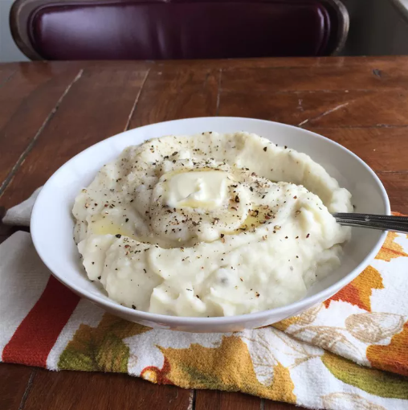

Mashed Potatoes

Description
"These mashed potatoes with heavy cream are too fattening to have on a regular basis.
I only make these on holidays, and everyone wonders what's in them that's makes them so rich."
Ingredients
- 5 pounds red potatoes, peeled and quartered
- ½ cup of butter
- 1 cup heavy cream
- Salt and pepper to taste
Steps
- Gather the ingredients.
- Place potatoes into a large pot with enough water to cover; bring to a boil.
Cook until fork tender, about 20 minutes. Drain.
- Add butter to potatoes in the pot. Mash using a potato masher, ricer, or mixer until smooth.
Gradually beat in heavy cream until well combined. Season with salt and pepper. Serve hot.
Return Home
Credit to allrecipes.com